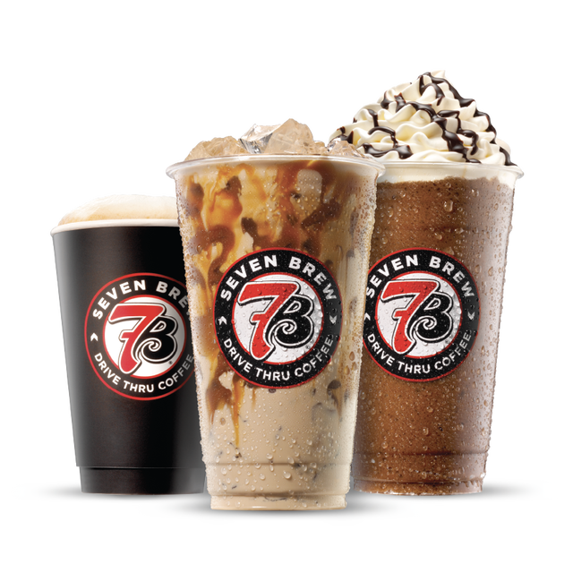

What 7 Brew actually pays its brewistas, the minimum hiring age, and how to apply — based on public salary data and 800+ current listings.
7 Brew's rapid store growth has translated into a large number of active job listings nationwide, with pay reported to vary by location, role and tips.
According to ZipRecruiter's published salary data, 7 Brew brewista pay has been reported in a range of roughly $15 to $28 per hour, which can include base wage plus tips depending on the stand. Because nearly every location is independently franchised, exact pay varies meaningfully by state minimum wage, local cost of living, and the individual franchise owner's pay structure.
| Role | Reported Pay Range |
|---|---|
| Brewista (entry-level) | ~$15–$20/hr (base + tips) |
| Experienced / lead brewista | ~$18–$28/hr |
Ranges are based on aggregated public salary reporting (ZipRecruiter) as of September 2026, not an official 7 Brew wage scale. Confirm exact pay with the specific hiring stand.
Most publicly available reporting points to a minimum hiring age around 16 for entry-level brewista positions, in line with standard quick-service industry norms, though this can vary by state labor law and individual franchise owner policy. No specialized certification is typically required to start; training is usually provided on the job.
7 Brew has been reported to have 800+ open positions listed on Glassdoor at any given time, a direct result of its breakneck pace of roughly 60+ new stand openings per month in 2026 (62 new locations opened in August 2026 alone). Check Glassdoor, Indeed, ZipRecruiter, or the official careers page at 7brew.com for current listings in your area. If a stand near you hasn't opened yet, our locations directory can help track expansion into new markets.

A "brewista" is 7 Brew's term for its front-line drive-thru team members, who take orders through a headset or window, build customized drinks to order (often within a 3–5 minute target window), operate the register or app payment system, and maintain the stand. It's a fast-paced, customer-facing role built around the same speed and customization values described in our how-to-order guide.
Reported pay for 7 Brew brewistas (baristas) ranges from about $15 to $28 per hour depending on location, role and tips, according to ZipRecruiter's published salary data. Actual pay varies significantly by state, franchise owner and experience level.
Most reporting points to a minimum hiring age of 16 for entry-level positions, consistent with typical quick-service and drive-thru hiring standards, though exact requirements can vary by franchise owner and state labor law. Confirm directly with your local stand when applying.
7 Brew has been reported to have 800+ open positions listed on Glassdoor at a time, driven by its rapid pace of roughly 60+ new store openings per month in 2026. Check Glassdoor, Indeed or the careers section of 7brew.com for current local openings.
"Brewista" is 7 Brew's internal title for the front-line team members who take orders, build drinks and run the drive-thru window — equivalent to a barista role at other coffee chains.
Both part-time and full-time shifts are commonly available, which fits the drive-thru model's need for coverage across early morning, midday and evening hours. Specific scheduling depends on the individual franchise location.
Benefits vary by franchise owner since most stands are independently franchised rather than corporate-run. Commonly reported perks in the quick-service drive-thru space include employee drink discounts and flexible scheduling; ask about specific benefits (health coverage, PTO, retirement) during your interview since they are not standardized company-wide.
Applications are typically submitted online through the careers section of 7brew.com or through job boards like Indeed, Glassdoor or ZipRecruiter, followed by an in-person or phone interview at the specific stand that's hiring.
Drive-thru tipping has become increasingly common industry-wide, and reported brewista pay ranges often reflect tips as part of total hourly compensation — ask about tip pooling policy at your specific stand during the interview.